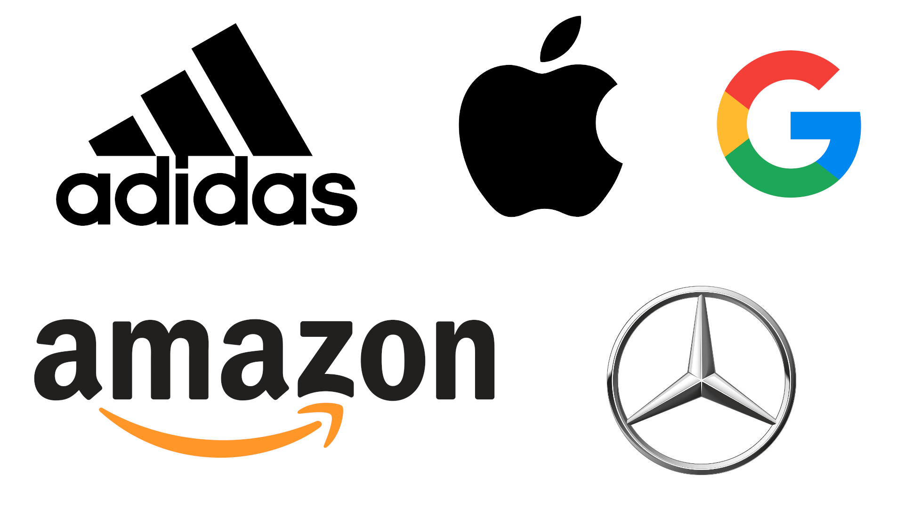

Das Ausmaß
2016 befanden sich laut dem Global Slavery Index 40,3 Millionen Menschen in der Sklaverei. Das ist ungefähr die Hälfte der Bevölkerung Deutschlands.
Von diesen 40,3 Millionen sind auch noch 25% Kinder.
Außerdem 24,9 Millionen Menschen in Zwangsarbeit.
Deswegen lässt sich Sklaverei im Herstellungsprozess vieler Firmen in vielen Produkten wiederfinden. Die Spanne zieht sich von Handys und Computern über Fisch und Kakao bis hin zu Klamotten.
|
40300000 Sklaven
40300000
24900000 Zwangsarbeiter*innen
24900000
10075000 Kinder
10075000
|

|
Betroffene Länder
Vorallem in Ländern in Afrika oder Asien ist die Sklaverei weit verbreitet.
Die Regierung tut hier oft nichts gegen die Sklaverei und die Sklaven werden oft aufgrund ihrer Schulden oder mit Gewalt zur Sklaverei gezwungen.
Klicke doch mal auf die Weltkugel links um zur Karte vom Global Slavery Index zu kommen.
|
Firmen
Das Australian Strategic Policy Institute hat 2019 in seiner Studie Uyghurs for sale 83 große Firmen aufgezeigt, die direkt oder indirekt die Zwangsarbeit von Uiguren in China nutzen.
Zu diesen gehören auch:
Adidas, Amazon, Apple, BMW, Calvin Klein, Google, Microsoft, Mercedes-Benz, Samsung und viele viele mehr.
|

|